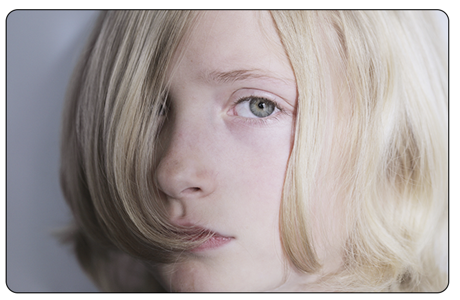
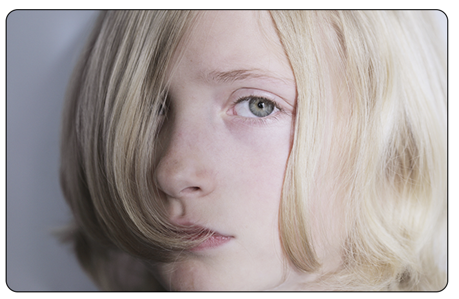

Unge bliver fra en tidlig alder pålagt det her ”mindset”, at de skal have styr på hele deres uddannelse mens de stadig går i folkeskole. Det er forkert. Unge skal have at vide, at de har hele livet til at beslutte sig og ingen vil dømme dem for at skifte uddannelse, hvis de allerede har valgt en men er utilfreds med den.
Det vigtigste er at de ikke udvikler stress i en alt for tidligt alder, da det kan have en seriøs konsekvens senere i livet.
Alt for mange unge går ned med stress, fordi de ikke kan håndtere alle de situationer de bliver kastet ud i. Hvis voksne absolut gerne vil give unge voksenansvar fra en ung alder, bør de også sørge for, at unge er udrustede til voksenlivet ved f.eks. undervisning.
Studerende er unge voksne og bliver ramt af stress og depression netop fordi de har så meget at balancere som de ikke har styr på. Det behøver skam ikke være ting som deltidsarbejde og skole, men også deres tanker. Der går så mange tanker igennem en ungs hoved som de ikke får snakket med nogen om.
Det bedste og nemmeste er at snakke med en god ven, der er i samme situation, så man ikke bliver dømt eller talt ned til. De skal ikke skamme sig over de tanker de har.
Unge studerende bliver alt for tit bedt om at tage sig sammen og bliver mere voksne og acceptere, at livet er surt. Det er stik modsat, hvad de burde få at vide. Deres mentale helbred bliver kun værre af det. For at få et bedre mentalt helbred bør alle unge have frirum til at tage pauser fra hverdagen og lade tankerne og fantasien flyve vildt, når de har brug for det. At give hjernen pusterum er vitalt hvis man vil undgå stress og depression. Disse mentale lidelser opstår ofte, fordi man har holdt sine tanker og følelser gemt enten pga. en travl hverdag eller omgivelser der ikke vil høre på dem.
Jeg foretog en undersøgelser på 15 studerende. 7 af dem sagde de følte sig stressede nogengange men 6 sagde alt for ofte. Og 8 sagde de aldrig får nok pause fra hverdagen.
De beviser tydeligt at unge har brug for dette frirum til at trække vejret og udtrykke dem selv og deres tanker. Ting børn må helt uden tilladelse. Denne hjemmeside tilbyder noget hjælp og inspiration til dette.
Desværre vil mange unge ikke indrømme de har brug for hjælp før det er for sent så derfor tilbyder jeg lidt selvhjælp på denne side i form af sjov og ballade fanen.
Men hvis du mangler seriøs hjælp så tjek fanen hjælp hvor du kan finde brugbare links til online chatrum og telefon terapi.